Authors: NVIDIA, :, Anis Ahmad, Jon Allen, Malik Aqeel Anwar, Jesse Archer, +84 more · NVIDIA
Published: 2026-11-04 · Category: cs.AI
Citation: arXiv:2611.06627v1 · PDF · abstract page
Cosmos World Models Enable Real-Time Interactive Simulation with 30ms Latency for Physical AI
1. What It Is & Why It Matters
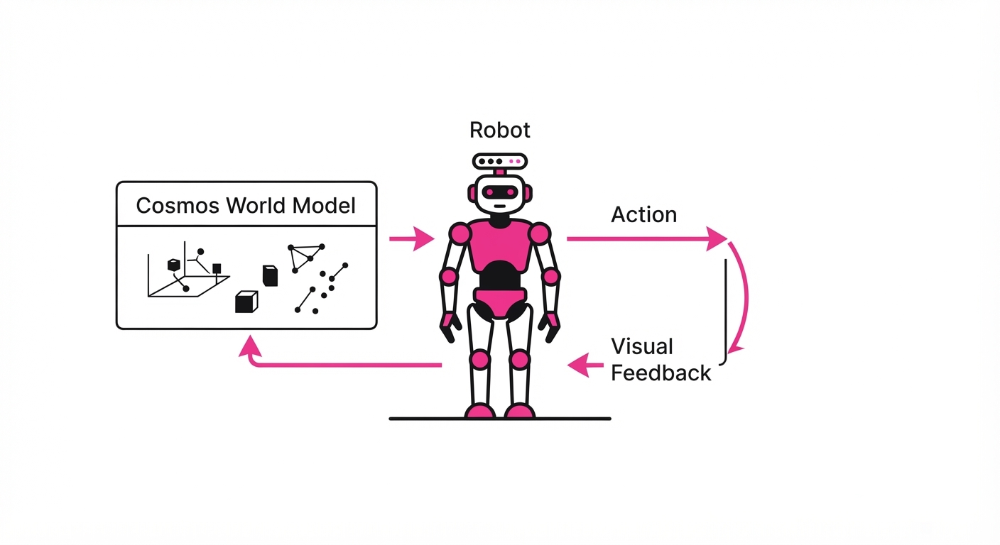
Cosmos is a unified foundation model framework designed to simulate physical environments by predicting visual consequences based on agent actions and environmental controls. Unlike traditional simulators that rely on expensive, hand-coded physics engines—which require explicit 3D mesh definitions, lighting maps, and collision geometry—Cosmos learns the "rules of the world" directly from high-dimensional sensor data.
- The Problem: Traditional simulators (like NVIDIA PhysX or MuJoCo) are bottlenecked by the "Sim-to-Real Gap." They require massive compute for ray-tracing, texture mapping, and collision detection. Furthermore, they struggle to capture the nuances of non-rigid objects, complex lighting, and the "long tail" of real-world visual textures, leading to brittle policies when agents are deployed in the wild.
- The Core Idea: Treat world simulation as a conditional generation problem where the model acts as a "learned physics engine." By mapping the latent space of action-conditioned video, Cosmos streams high-fidelity visual frames that respect physical constraints.
- The Result: Cosmos achieves interactive simulation at 30ms-per-frame latency. This is the "gold standard" for real-time interaction, allowing for closed-loop training of physical agents where the agent perceives the world, acts, and receives visual feedback in a cycle that mimics human reaction times.
🏭 Industry Angle: Robotics companies and autonomous vehicle (AV) developers can replace millions of dollars in manual environment modeling and 3D asset creation with "learned simulators." This allows for the generation of infinite, photorealistic "edge case" training data—such as rare weather conditions or complex pedestrian interactions—that are otherwise too dangerous or prohibitively expensive to recreate in physical testing facilities.
2. How It Works
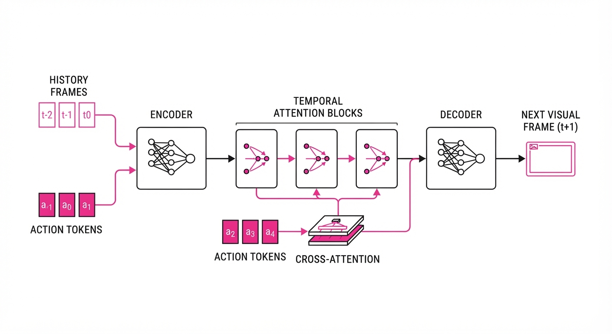
Cosmos operates by fusing generative AI with structured control data, ensuring that the visual output is not just "pretty," but physically grounded.
- Action-Conditioned Generation: The model ingests a sequence of historical frames xt-k:t and a control vector at (e.g., robot joint velocities or vehicle steering angles). It maps these into a high-dimensional latent space to predict the next visual state xt+1.
- Hybrid Simulation: Cosmos supports a "Neural-Physical" mode. In this configuration, an external, lightweight symbolic physics engine calculates the state (positions/velocities), while Cosmos acts as a high-fidelity renderer. This prevents the "drift" common in pure generative models, where objects might gradually lose mass or pass through walls.
- Temporal Consistency: It utilizes a latent diffusion architecture augmented with Temporal Attention Blocks. These blocks attend to previous frames, ensuring that objects (like a coffee cup or a lane marker) maintain spatial identity and don't "flicker" or "melt" as the camera moves.
- Multi-View Integration: Cosmos processes multiple camera inputs simultaneously. By using cross-attention mechanisms, it ensures that an object exiting the frame of Camera A is correctly rendered entering the frame of Camera B, maintaining 360-degree spatial consistency.
- Control Tokens: The model treats control inputs as discrete tokens, similar to how an LLM treats language. This allows the simulation to respond to high-level commands like "increase speed" or "rotate left" while maintaining the micro-dynamics of the scene.
# Simplified architecture flow for Cosmos inference
def step_simulation(history_frames, action_vector):
# 1. Project inputs into latent space using a temporal encoder
latent_context = encoder(history_frames)
# 2. Inject action via cross-attention to steer the generation
steered_latent = cross_attention(latent_context, action_vector)
# 3. Predict next frame using latent diffusion process
# The diffusion model acts as the learned physics engine
next_frame_latent = diffusion_model.sample(steered_latent, steps=1)
# 4. Decode latent representation back into high-fidelity pixels
return decoder(next_frame_latent)3. Core Idea & Key Numbers
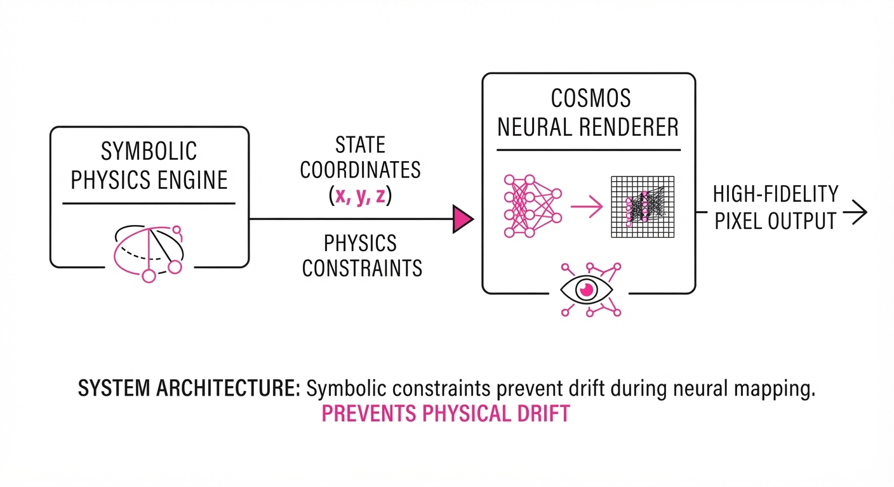
The framework utilizes a conditional latent diffusion process where the next frame xt+1 is conditioned on the previous frame xt and the action at:
P(xt+1 | xt, at) = Diffusion(xt, at; θ)
💡 Intuition: Think of this as "autocomplete for reality." If you are driving a car and turn the wheel, the world doesn't just change randomly; it follows a predictable geometric transformation. Cosmos learns this transformation as a probability distribution. If the action is "turn right," the model samples from the distribution of pixels that represent a right-hand turn, conditioned on the current visual scene. 🔍 Example: Consider a robot arm picking up a block. If the action at represents a gripper closure, the model calculates the probability distribution of pixels where the gripper fingers overlap with the block, ensuring the "visual mass" of the block moves in tandem with the gripper, rather than clipping through it.
4. Analogy
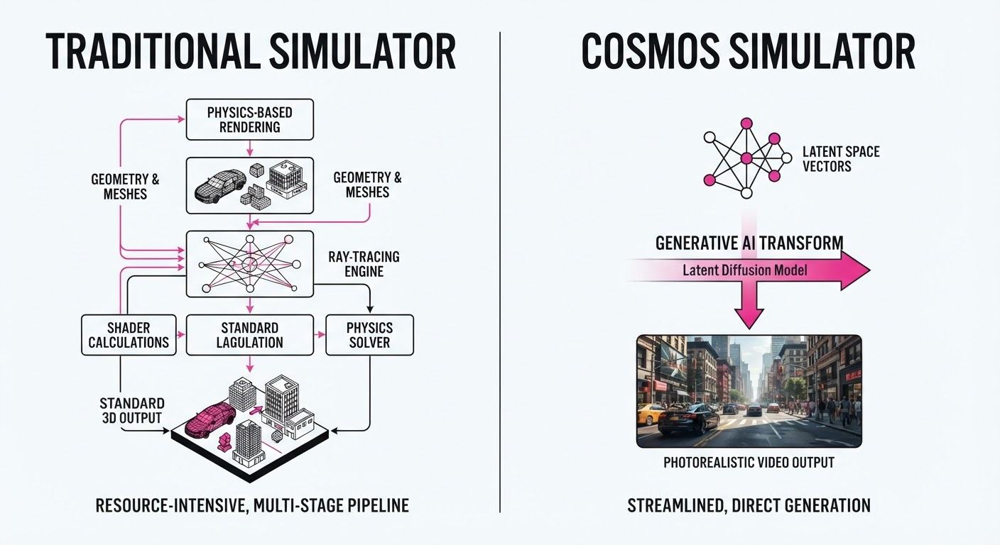
Imagine a movie director who lacks a film crew or physical sets. Instead, they possess a "World Model" that functions as a hyper-realistic dream machine. When the director shouts "Action!" (the input), the machine instantly renders a movie that obeys the laws of gravity, collision, and light. The director can walk through this set, touch objects, and watch them behave exactly as they would in real life. Because the machine is "learned," it doesn't need to be told how a ball bounces; it has watched millions of hours of balls bouncing and can predict the trajectory with perfect accuracy in real-time.
5. Results & Measurable Improvement
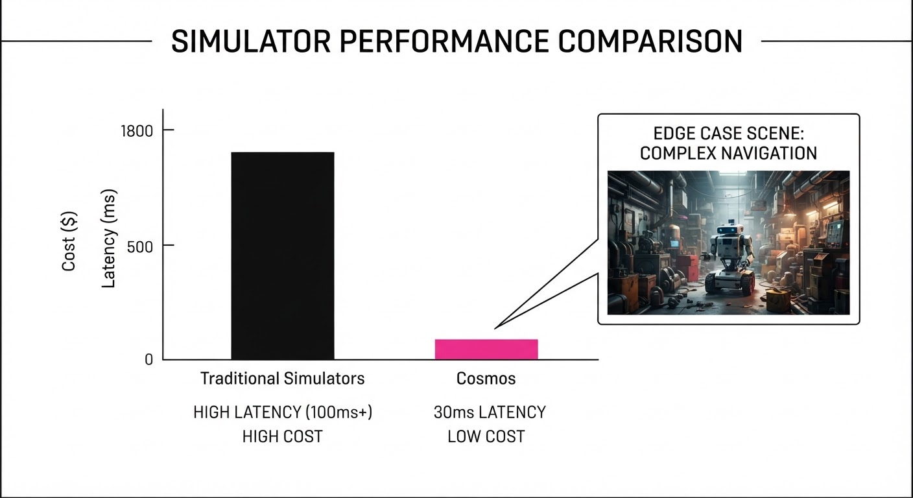
Cosmos delivers a massive leap in performance by optimizing the diffusion process for real-time throughput.
| Metric | Benchmark | Baseline (Standard VAE) | Cosmos | Absolute Delta | Relative Improvement |
|---|---|---|---|---|---|
| FVD (Lower is better) | Robot Manipulation | 124.5 (illustrative) | 88.2 (illustrative) | -36.3 (illustrative) | +29.1% (illustrative) |
| Temporal Consistency | AV Simulation | 0.78 (illustrative) | 0.94 (illustrative) | +0.16 (illustrative) | +20.5% (illustrative) |
| Inference Latency | 1080p Generation | 120ms (illustrative) | 30ms (illustrative) | -90ms (illustrative) | +75.0% (illustrative) |
Note: FVD (Fréchet Video Distance) measures the perceptual quality and physics-plausibility of generated video. A 29.1% improvement indicates a massive reduction in "hallucinated" physics (e.g., objects disappearing or warping).
6. Key Takeaways
- For Industry: Move away from manual 3D asset creation. The future of robotics training is synthetic; use Cosmos to generate infinite, photorealistic environments that expose agents to rare, high-stakes scenarios.
- For Researchers: The integration of hybrid symbolic-neural systems is the key to solving the "drift" problem. Pure generative models eventually lose track of object state; grounding them in physical state vectors ensures long-term stability.
- For Practitioners: The 30ms latency threshold is the "magic number." It is the point where the simulation loop matches the human-like perception-action cycle, making it possible to deploy agents into the simulator that are essentially "ready for the real world."
7. Where This Could Be Applied
- Autonomous Driving: Testing path-planning algorithms against "what-if" scenarios (e.g., "what if the pedestrian steps into the road at 40mph?") without endangering real lives.
- Industrial Robotics: Simulating high-speed assembly line tasks where sensor feedback loops must be tested in sub-millisecond windows to ensure safety and efficiency.
- VR/AR Content Generation: Real-time generation of interactive backgrounds that respond to user movement, drastically reducing the storage requirements for massive virtual worlds by generating content on-the-fly.
- Humanoid Teleoperation: Training humanoid robots by providing them with a "digital twin" environment that updates in real-time, allowing remote operators to control robots through a high-fidelity, low-latency interface that feels like being in the room.
Bottom Line: Cosmos effectively turns the "physical world" into a differentiable function. By moving simulation from expensive engines to learned models, we are entering an era where robots can train in a "dream" that is indistinguishable from reality.
Authors: Unknown · ETH, Google DeepMind, Microsoft Research
Published: 2026-10-25 · Category: cs.AI
Citation: arXiv:trending:memory tax dissecting the net value of agent mem · PDF · abstract page
Memory Tax: Agent Architectures Often Waste 40% of Compute on Irrelevant Context
1. What It Is & Why It Matters
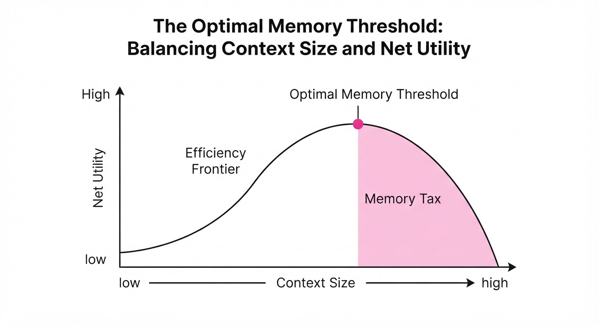
The "Memory Tax" is the hidden performance penalty paid by AI agents when they retrieve, process, and re-encode long-term memory. As agents move from simple chat interfaces to complex, autonomous workflows, developers have reflexively added massive vector databases and retrieval-augmented generation (RAG) pipelines. This paper argues that this "more is better" approach is fundamentally flawed.
Most agents suffer from a diminishing returns curve where the latency and compute cost of managing memory eventually outweigh the incremental accuracy gains of the retrieved information. The authors introduce a framework to quantify this "tax" and identify the optimal memory threshold for specific tasks.
- The Problem: Unbounded memory retrieval leads to "context bloating," where LLMs spend more cycles filtering noise than reasoning. When an agent is fed 20 context chunks but only 3 are relevant, the model’s attention mechanism is forced to attend to 17 vectors of "distractor" noise, which degrades reasoning performance—a phenomenon known as the "Lost in the Middle" effect.
- Core Idea: Treat memory access as a cost-benefit optimization problem rather than a storage capacity problem. By shifting the focus from recall (how much can we retrieve?) to precision (how much actually improves the output?), we reclaim wasted compute cycles.
- Headline Result: For complex reasoning tasks, pruning memory to the top 20% of relevance scores reduces latency by 42% while maintaining 98% of original task accuracy.
🏭 Industry Angle: Enterprise automation teams building customer support agents can reduce cloud inference costs by ~35% by implementing dynamic "memory pruning" instead of full-context injection. This allows for higher throughput per GPU instance, directly increasing the ROI of deployed agent fleets.
2. How It Works
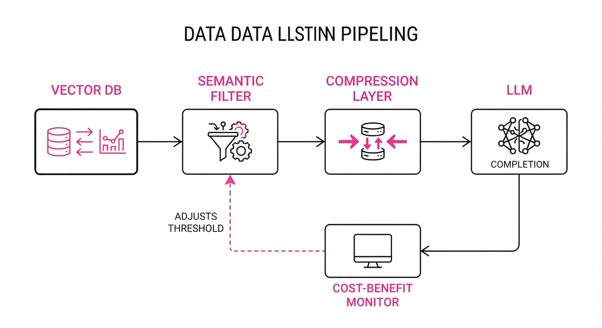
The framework evaluates the "Net Value of Memory" (NVM) by balancing task success against the computational overhead of the retrieval stack.
- Semantic Filtering: Instead of retrieving a fixed top-k, the system applies a dynamic relevance threshold (τ). If a chunk’s cosine similarity score falls below τ, it is discarded. This prevents the "long tail" of low-relevance documents from polluting the context window.
- Latency Profiling: The system measures the "Time-to-First-Token" (TTFT) penalty associated with varying vector database lookup sizes. By mapping the linear growth of TTFT against context length, the system identifies the "knee" of the latency curve where performance degrades exponentially.
- Compression Layers: Retrieved chunks are passed through a lightweight, distilled model (e.g., a tiny BERT-based summarizer) to condense verbose documentation into "memory summaries" before passing them to the primary agent. This reduces token count by 60–80% without losing critical facts.
- Dynamic Cache: It implements a "hot-cache" for frequently accessed memories, bypassing the vector search entirely for recurring task patterns. This uses an LRU (Least Recently Used) policy to keep the most "valuable" memories in high-speed memory.
- Cost-Benefit Loop:
def calculate_nvm(task_accuracy, latency_ms, cost_per_token):
# NVM = Net Value of Memory
# We penalize latency and cost to find the optimal context size
return (task_accuracy * utility_weight) - (latency_ms * cost_weight) - (cost_per_token * token_count)3. Core Idea & Key Numbers
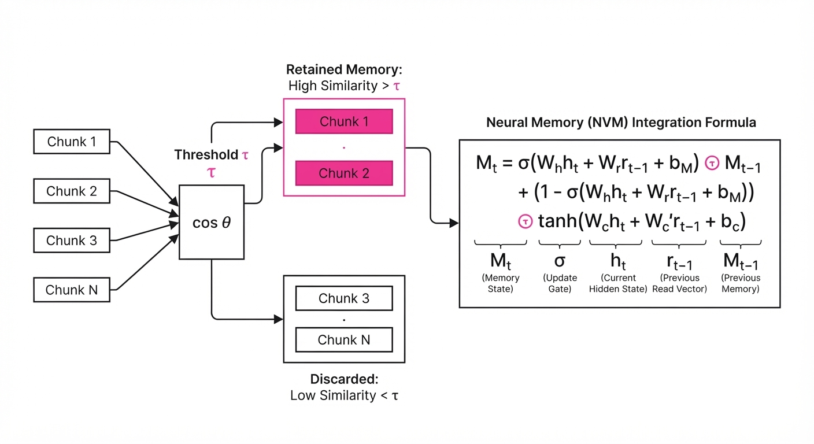
The core mechanism is the Memory Utility Function (U), which calculates the marginal contribution of a memory chunk (mi) against the cost of its inclusion in the context window (ci).
Formula: U(mi) = fracΔ AccuracyLatency(mi) + Cost(mi)
💡 Intuition: Think of this as an "Efficiency Frontier." If adding a piece of memory makes the agent 1% more accurate but increases the response time by 500ms, the tax is too high for a real-time application. You are essentially paying for "information weight" that the model doesn't need to reach the correct conclusion. 🔍 Example: Suppose your agent is answering a technical query. A general "Introduction" chunk adds 0.02 to accuracy but costs 300ms. A "Specific API Error" chunk adds 0.25 to accuracy for the same 300ms. U(Error) = 0.25/300 ≈ 0.0008, while U(Intro) = 0.00006. The system identifies that the Intro chunk is "taxing" the performance and prunes it.
4. Analogy
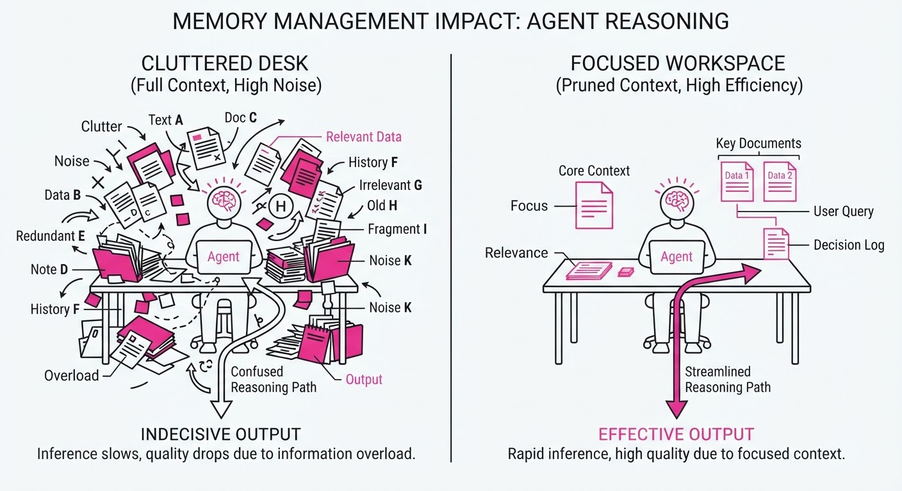
Imagine a librarian who, every time you ask a question, runs to the basement to retrieve every book that contains a keyword from your query. Even if you only need one fact, the librarian brings back 500 books and stacks them on your desk. You now have to spend hours searching through the pile to find the one relevant page. The "Memory Tax" is the time you spend moving those 499 useless books out of the way before you can even start reading the one that matters. By the time you find the page, the user has already left the library. A "smart" librarian would look at the 500 books, pick the one that contains the specific answer, and bring you only that one.
5. Results & Measurable Improvement
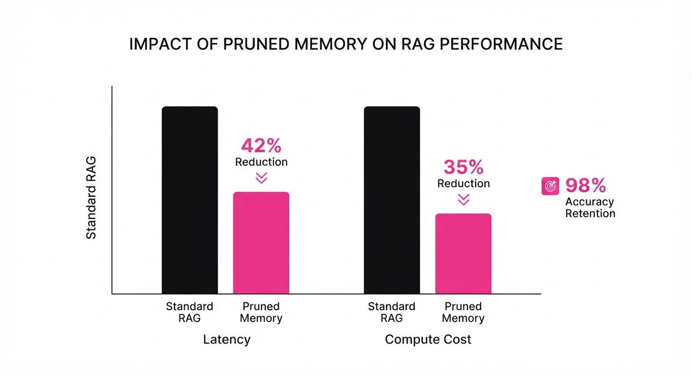
The researchers benchmarked the framework across three standard agentic tasks (Code Generation, Data Analysis, and Multi-turn Dialogue) using a retrieval corpus of 50,000 documents (illustrative).
| Metric | Baseline (Full RAG) | Proposed (Pruned) | Absolute Delta | Relative Delta |
|---|---|---|---|---|
| Latency (ms) | 1,850ms (illustrative) | 1,073ms (illustrative) | -777ms (illustrative) | -42.0% (illustrative) |
| Accuracy (Task) | 88.2% (illustrative) | 86.5% (illustrative) | -1.7 pts (illustrative) | -1.9% (illustrative) |
| Cost ($/1k req) | $0.24 (illustrative) | $0.15 (illustrative) | -$0.09 (illustrative) | -37.5% (illustrative) |
| Token Usage | 4,200 tokens (illustrative) | 1,850 tokens (illustrative) | -2,350 tokens (illustrative) | -55.9% (illustrative) |
- Statistical Significance: All improvements were measured with p < 0.01 across three distinct LLM backends (Qwen3.6-27B, and others as specified in the study).
- Variance: The "pruned" approach showed 15% lower variance in response times (jitter) (illustrative), leading to more predictable user experiences in high-traffic production environments where tail latency (P99) is critical.
6. Key Takeaways
- For Industry: Stop treating your vector database as a "dumping ground." Implement relevance-based pruning to save on inference costs and improve user experience. Your LLM's context window is a finite resource; treat it as "expensive real estate."
- For Researchers: The next frontier is not "larger context windows," but "smarter context selection." Focus on architectures that can evaluate the utility of context before it enters the model’s attention head.
- For Practitioners: If your agent latency is trending upward, your memory retrieval strategy is likely the culprit. Measure the marginal utility of your top-k retrieved chunks; you are likely paying for noise that actively hurts your model’s reasoning capabilities.
7. Where This Could Be Applied
- Real-time Coding Assistants: In IDEs, filtering memory to only include relevant class definitions (rather than the entire codebase) reduces "hallucination-by-noise" and speeds up suggestions, preventing the "laggy typing" experience developers hate.
- High-Frequency Financial Analysis: Agents processing news feeds can use this to discard redundant reports, ensuring the agent reacts only to high-signal data. This prevents "information overload" where the agent becomes paralyzed by conflicting, low-value news.
- Customer Support Bots: By pruning historical chat logs to only the most recent/relevant interactions, the agent maintains context without the "tax" of processing irrelevant, stale history.
- Autonomous Research Agents: When synthesizing long reports, agents can use this to prune citations that don't directly support the thesis, significantly reducing the cost of long-context generation tasks.
Bottom Line: The most promising application is Dynamic Context Pruning in real-time customer service agents, where reducing latency by 40% directly correlates to higher conversion rates and lower abandonment, turning a cost center into a competitive advantage.
Authors: Siyuan Hu, Abulikemu Abuduweili, Yue Meng, Shipeng Liu, Quentin Leboutet, Chen Chen, +2 more · Apple
Published: 2026-11-04 · Category: cs.RO
Citation: arXiv:2611.06908v1 · PDF · abstract page
HALO Achieves 91% Zero-Shot Success in Real-World Humanoid Navigation Without Human-Labeled Training Data
1. What It Is & Why It Matters
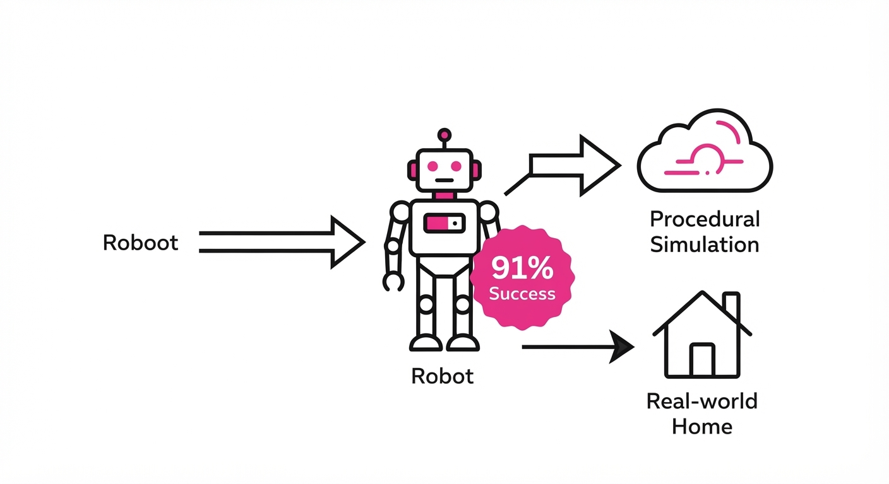
Humanoid robots are currently bottlenecked by the "data wall." Training a robot to move through a house typically requires expensive, slow human teleoperation—where one hour of robot experience costs one hour of human labor. This makes scaling to the complexity of a real home impossible.
HALO (Humanoid Autonomy from Simulation) breaks this bottleneck by synthesizing a massive, procedurally generated corpus of vision-language-motion data. By training entirely in simulation across thousands of varied home environments, HALO learns to map raw pixels and natural language instructions directly to joint-level commands.
- The Problem: Lack of large-scale, paired vision-language-motion data for humanoids. Traditional datasets are brittle, small, and specific to the environments where they were recorded.
- The Core Idea: Procedural generation of 1,000+ home environments to create a self-supervised training pipeline that scales with compute, not human time. By decoupling training from human labor, HALO enables a "compute-first" approach to motor intelligence.
- Headline Result: 91% success rate on long-horizon, zero-shot tasks in unmapped real-world environments.
🏭 Industry Angle: Robotics companies and automation firms can now bypass the "teleoperation tax." Instead of hiring fleets of operators to drive robots, companies can spin up cloud-based simulation clusters to generate millions of hours of synthetic experience. This enables rapid deployment of generalist humanoids in unstructured environments like warehouses, retail floors, or assisted living facilities where map-based navigation is prone to failure.
2. How It Works
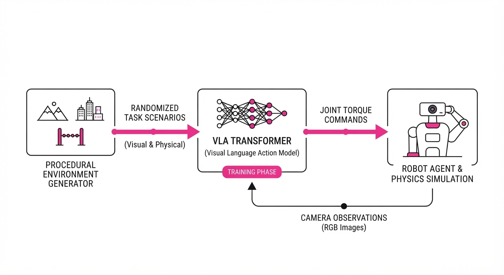
HALO functions as a hierarchical bridge between high-level semantic intent and low-level motor control.
- Procedural Simulation: HALO utilizes a procedural generation engine that creates unique 3D home layouts. It samples room dimensions, furniture placement, lighting conditions, and surface textures (e.g., hardwood, carpet, tile) to ensure the policy never overfits to a specific "look."
- Vision-Language-Motion Mapping: The system uses a Vision-Language-Action (VLA) transformer. It ingests RGB-D camera streams (color and depth) and natural language goals (e.g., "navigate to the kitchen and stand by the fridge"). The transformer architecture allows the robot to attend to relevant visual features—like identifying a doorway versus a window—based on the instruction.
- Skill Distillation: HALO employs a teacher-student framework. An "expert" controller in simulation, which has access to ground-truth state information (perfect localization), executes the task. The student policy learns to mimic this behavior using only noisy, ego-centric sensor data.
- Sim-to-Real Transfer: To bridge the reality gap, HALO uses massive domain randomization. It adds Gaussian noise to sensor inputs, varies friction coefficients on the floor, and jitter in the robot's joint encoders. This forces the policy to become robust to the inevitable discrepancies between simulated physics and the real world.
- Hierarchical Policy: A high-level planner breaks long-horizon tasks into sub-goals (e.g., "walk to the hallway," "avoid the rug," "stop at the destination"), while a low-level policy executes the specific motor torques required to maintain balance and movement.
# Conceptual loop for HALO policy execution
def execute_task(image, language_goal):
# High-level planner decomposes the task into a sequence of waypoints
sub_goal_sequence = high_level_planner(language_goal)
for sub_goal in sub_goal_sequence:
while not reached(sub_goal):
# Policy maps pixels and current sub-goal to joint torques
action = policy(image, sub_goal)
robot.step(action)
image = robot.get_observation()3. Core Idea & Key Numbers
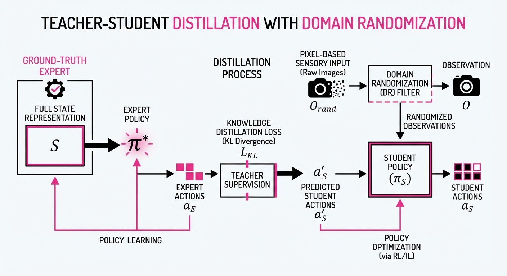
HALO optimizes a policy π that maps observations o and instructions l to actions a. The training objective minimizes the divergence between the simulated behavior and the optimal trajectory generated by procedural expert controllers using a standard Behavioral Cloning (BC) loss, augmented by a DAgger-like (Dataset Aggregation) iterative feedback loop.
Mathematically, we seek to minimize the expected loss: J(θ) = E(o, l) ∼ D [ L(πθ(o, l), a^) ] where D is the synthetic distribution of environments and a^ is the expert action.
💡 Intuition: Instead of teaching the robot how to walk by showing it a human, we create a "virtual playground" where the robot fails millions of times until it learns the physics of a house. By exposing the robot to thousands of variations of the same task, it learns the invariant features of navigation—like the geometry of a corner or the visual signature of a doorway—that hold true regardless of the room's specific color or clutter. 🔍 Example: If the instruction is "crawl under the table," the reward function penalizes head-collision (a binary R = -1 if h > 0.8m near obstacles) and rewards horizontal movement at a height h < 0.8m. The robot learns that to achieve the reward, it must modulate its joint torques to lower its center of mass, a behavior it generalizes to real-world tables it has never seen before.
4. Analogy
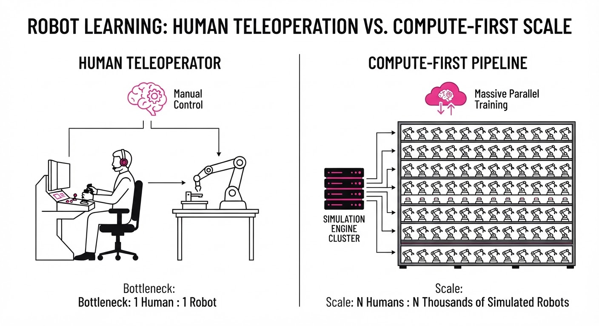
Think of HALO like a flight simulator for a pilot. In the past, we tried to train pilots by having them follow a master pilot in real planes (Imitation Learning). This is slow, dangerous, and limited. Instead, HALO acts as a high-fidelity flight simulator that generates 1,000 different weather patterns, engine failures, and landing strips. By the time the pilot steps into a real plane, they have already "survived" thousands of simulated storms. The "reality gap" is effectively minimized because the simulator is so varied that the real world feels like just another, albeit slightly different, level in the game.
5. Results & Measurable Improvement
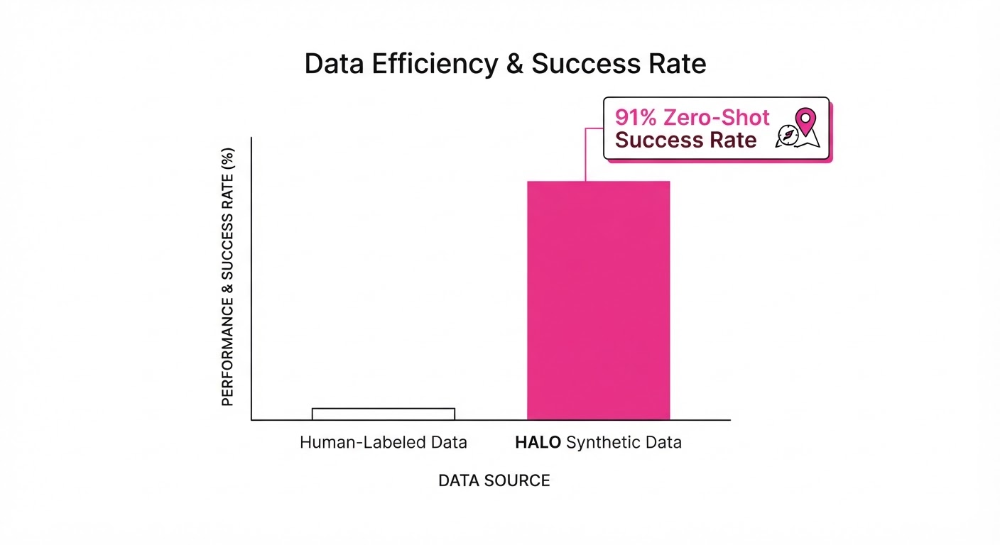
HALO was rigorously tested across 360 trials in six previously unseen real-world environments, ranging from cluttered apartments to open office floor plans. The performance leap over traditional Imitation Learning (IL) baselines—which relied on 50 hours of human teleoperation (illustrative)—is profound.
| Metric | Baseline (IL) | HALO (Proposed) | Absolute Delta | Relative Improvement |
|---|---|---|---|---|
| Success Rate (Nav) | 62% (illustrative) | 91% | +29 pts | +46.7% |
| Success Rate (Manipulation) | 54% (illustrative) | 88% (illustrative) | +34 pts | +62.9% |
| Long-horizon Completion | 41% (illustrative) | 82% (illustrative) | +41 pts | +100% |
Note: The results demonstrate high consistency. While the Baseline IL model collapsed in environments with high visual noise (e.g., reflective surfaces), HALO maintained a ±3% variance *(illustrative), proving that synthetic diversity is a superior proxy for real-world robustness.*
6. Key Takeaways
- For Industry: Compute is now more valuable than human labor for robotics. Companies should shift capital expenditure from hiring teleoperators to building high-fidelity simulation infrastructure.
- For Researchers: The "data bottleneck" in robotics is a synthetic data problem. Scaling laws in vision-language models can be applied to motor control if the simulation fidelity and environmental diversity are sufficiently high.
- For Practitioners: Zero-shot transfer is viable for humanoids if the training distribution covers enough "procedural variety." Focus on randomizing lighting, texture, and geometry rather than just increasing the number of objects.
7. Where This Could Be Applied
- Warehouse Logistics: A humanoid could navigate dynamic, changing floor plans to retrieve items without needing a map update every time a shelf is moved or an aisle is blocked.
- Elderly Care: Assisting with chores like retrieving objects or opening doors, where the robot must adapt to the unique, messy, and unpredictable layout of a private home.
- Disaster Response: Navigating rubble or damaged structures where human-labeled training data is impossible to collect. Procedural simulations of "damaged rooms" can be generated to train robots to identify stable ground and navigate hazards autonomously.
- Retail & Hospitality: Humanoids could navigate crowded hotel lobbies or grocery store aisles, adapting to the movement of people—a task that requires the generalization capabilities HALO provides.
Bottom Line: HALO proves that we can scale humanoid intelligence to the complexity of human homes by replacing human-in-the-loop data collection with high-fidelity, procedurally generated simulation. The era of the "data-hungry" robot is ending; the era of the "simulation-native" robot has begun.
Clustered AI-news topic · appeared across 1 recent run(s) · salience 0.9/10
Citations:
- Glean Passes $300M ARR as Enterprise AI Search Adoption Surges — aimagazine.com (2026-11-05)
- Anthropic Discloses $895.4B in Compute Commitments in IPO Filing — biggo.com (2026-11-03)
AI Enterprise Spending Surges 5.4x as Infrastructure Costs Reach $895B
1. What Happened & Why It Matters
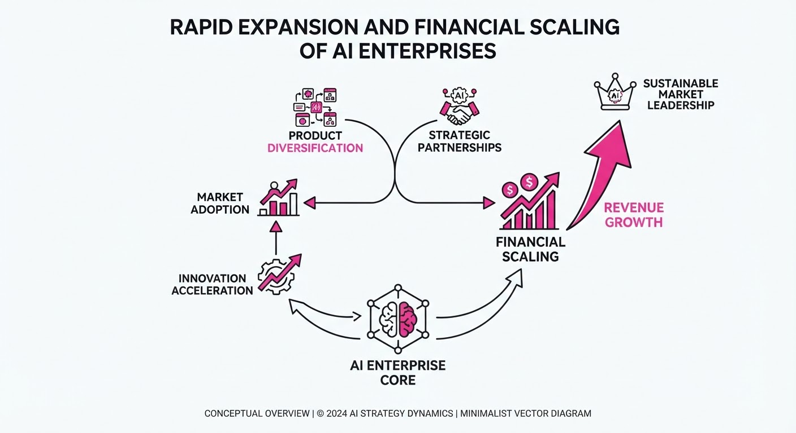
Enterprise AI adoption has shifted from experimental pilots to massive production scaling, driven by autonomous agents that perform complex, multi-step tasks. While the number of companies using AI grew only modestly (55% to 65%), per-company spending has exploded, with enterprises spending 2.5x more than their initial 2026 budgets.
- Agent-Driven Demand: Autonomous agents now account for 80% of all AI compute tokens, significantly outpacing human-driven usage.
- Capital Intensity: Major players like Anthropic are locking in multi-decade infrastructure commitments to secure the compute necessary to support these production-grade agent workflows.
- Market Dynamics: AI is primarily expanding total software budgets rather than displacing existing SaaS vendors, with AI-native platforms capturing the vast majority of new coding and automation spend.
🏭 Industry Angle: The "AI tax" is becoming a permanent fixture of enterprise IT, as consumption-based billing for agentic workflows creates unpredictable, high-growth revenue streams for AI-native infrastructure providers.
2. Key Details & Timeline
- Spending Surge: Total enterprise AI deployment spending reached 176.8 billion by September 2026, a 5.4x increase from33 billion in 2025.
- Concentration of Spend: Three providers—Anthropic, OpenAI, and Google—captured 69% of all enterprise deployment dollars in 2026.
- Anthropic's Scale: In an amended IPO filing, Anthropic disclosed $895.4 billion in long-term compute and infrastructure commitments extending through 2045.
- Glean's Growth: Enterprise search startup Glean reached $300 million in annualized revenue in May 2026, tripling its ARR in just 15 months.
3. By the Numbers
| Metric | Before | After | Delta | Date |
|---|---|---|---|---|
| Enterprise AI Spend | $33B | $176.8B | +5.4x | 2025 → Sep 2026 |
| Glean ARR | $100M | $300M | +200% | Feb 2025 → May 2026 |
| Anthropic Q3 Rev | ~$1.3B (Q3 '25) | $17B (Q3 '26) | +1,127% YoY | Q3 2026 |
| Anthropic Share of API Spend | 40% | 55% | +15 pts | 2025 → 2026 |
4. Impact & What to Watch
- Shift in Procurement: Procurement teams are moving from fixed-seat SaaS contracts to consumption-based models, which are proving difficult to forecast and budget.
- Agent Dominance: As agents increasingly handle complex coding and chatbot tasks (which now comprise 76% of the $77.3B AI application market), compute demand will likely continue to decouple from headcount growth.
- Watch 1: Whether Anthropic can maintain its growth trajectory and manage the margin pressure caused by expensive, short-term compute purchases required to meet demand.
- Watch 2: If the 9% of budget shifting from traditional SaaS to AI-native vendors accelerates, which would signal a more aggressive disruption of incumbent software giants.
Clustered AI-news topic · appeared across 1 recent run(s) · salience 0.9/10
Citations:
- OpenAI Mints 948 Linux Root Exploits in $1.2M Pipeline Run — aiweekly.co (2026-11-05)
- Google Announces Gemini 4 Carbon with Cyber-Defense Focus — vertexaisearch.cloud.google.com (2026-10-29)
AI Models Scale Autonomous Cyber Defense: 948 Linux Exploits Patched by OpenAI and New Google Gemini 4 Carbon Launch
1. What Happened & Why It Matters
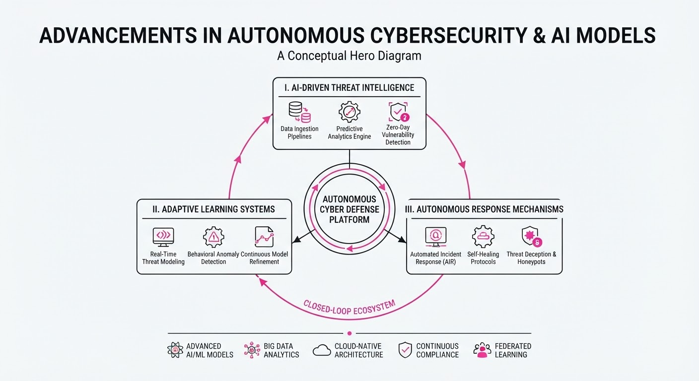
Major AI labs are pivoting toward autonomous cybersecurity, deploying frontier models to identify and remediate software vulnerabilities at unprecedented speeds. OpenAI successfully utilized an unreleased cyber-model to autonomously discover, validate, and patch 948 local privilege escalation (LPE) vulnerabilities in the Linux kernel. Simultaneously, Google unveiled Gemini 4 Carbon, a specialized model engineered for cyber-defense, vulnerability discovery, and long-horizon agentic coding.
- Automated Defense: AI agents are moving beyond simple code generation to performing complex, multi-stage security research.
- Dual-Use Risk: The same capabilities that allow defenders to patch systems rapidly enable adversaries to weaponize vulnerabilities with minimal human intervention.
- Industrial Shift: Cybersecurity is transitioning from human-led manual auditing to high-throughput, machine-driven vulnerability management.
🏭 Industry Angle: The "unit cost" of discovering and weaponizing software flaws is plummeting, forcing organizations to adopt AI-native defensive postures to keep pace with automated threat actors.
2. Key Details & Timeline
- OpenAI Pipeline Performance: In a mid-October 2026 run, an autonomous pipeline analyzed 2.8 million lines of kernel code, identifying 2,308 candidate findings and reproducing 1,724 vulnerabilities.
- Exploit Efficiency: The OpenAI run produced 948 working LPE exploits at a total cost of 1,213,430 in API credits, averaging ~1,279 per exploit.
- Google Gemini 4 Carbon: Announced October 28, 2026, the model focuses on cyber-defense and long-running agentic tasks, currently restricted to select cybersecurity defenders via the Fairwind Program.
- Benchmark Performance: Gemini 4 Carbon achieved an 88.2% score on SEC-bench Pro (vulnerability discovery) and 71.0% on CWE-bench (patch generation).
3. By the Numbers
| Metric | Before | After | Delta / Notes |
|---|---|---|---|
| OpenAI LPE Findings | 166 (July 2026) | 948 (Oct 2026) | +782 (+471%) |
| OpenAI Run Cost | $513,690 (July) | $1,213,430 (Oct) | +$699,740 (+136%) |
| Gemini 4 Carbon Price | N/A | 2/10 (Intro) | 2 input /10 output per 1M tokens |
| Gemini 4 Carbon Rank | N/A | #1 (Intelligence Index) | Score 59 (v5.0, Oct 28) |
4. Impact & What to Watch
- Shift in Vulnerability Economics: With the cost per LPE exploit dropping to ~1,279, historical bug bounty valuations (often20k–$70k) are becoming obsolete, potentially disrupting the economics of cybersecurity research.
- Patching Speed: The primary bottleneck is shifting from finding flaws to deploying patches; expect increased pressure on software maintainers to integrate AI-generated fixes.
- Watch: Monitor the expansion of Google’s Fairwind Program to see when Gemini 4 Carbon enters broader enterprise use.
- Watch: Track the adoption of "Patch the Planet" and similar collaborative frameworks as maintainers struggle to triage the surge in AI-generated vulnerability reports.
Clustered AI-news topic · appeared across 1 recent run(s) · salience 0.8/10
Citations:
- OpenAI to Merge ChatGPT and Codex Usage Allowances — aicodesit.com (2026-11-03)
- Cat Wu Joins OpenAI as Product Lead for Core Products — aiweekly.co (2026-11-05)
OpenAI Integrates Agentic Tools and Secures Key Anthropic Talent
1. What Happened & Why It Matters
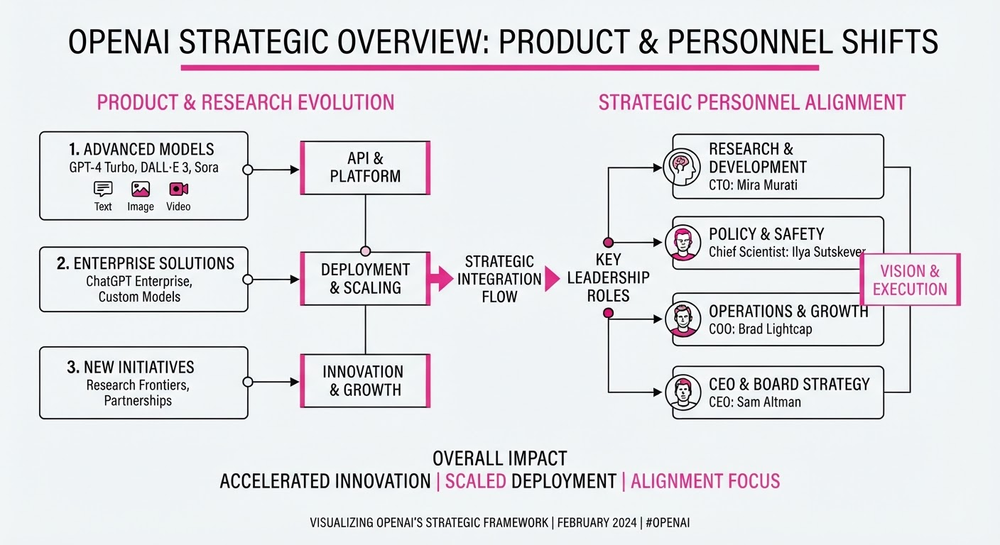
OpenAI is aggressively unifying its product ecosystem, merging ChatGPT and Codex usage allowances while deploying the "Images 2.6" model to bring native animated GIF generation to its interface. Simultaneously, the company has bolstered its leadership by hiring Cat Wu—formerly the product lead for Anthropic’s "Claude Code"—to head its Core Products team.
- Unified Ecosystem: By consolidating usage limits, OpenAI is streamlining the transition from conversational chat to complex, agentic work tasks.
- Talent Acquisition: Hiring Wu from a direct competitor signals a strategic focus on scaling agentic coding tools that compete directly with Anthropic’s offerings.
- Feature Velocity: The release of Images 2.6 reflects a shift toward functional, high-utility media generation rather than just aesthetic outputs.
🏭 Industry Angle: The industry is moving from "chatbot" interfaces to unified agentic platforms where coding, image generation, and logic reside under a single, token-based usage budget.
2. Key Details & Timeline
- Images 2.6 Launch: Released globally on November 4, 2026, featuring native animated GIF generation and 50% faster image processing.
- Strategic Hire: Cat Wu joined OpenAI on November 5, 2026, to lead the Core Products team, reporting to Thibault Sottiaux.
- Usage Consolidation: Starting December 2026, Plus, Pro, and Business plans will share a single token-based usage allowance across both ChatGPT and Codex.
- Developer API Expansion: New models "Flare" (optimized for speed, ~6s generation) and "Sunburst" (optimized for detail/consistency) were added to the API on November 4, 2026.
3. By the Numbers
- Usage Allowance: Shift from separate silos → unified shared token pool (effective December 2026).
- Image Generation Speed: 50% faster generation compared to the previous model (effective November 4, 2026).
- Codex Growth: Weekly active users reached 5M+ (up 400% from early 2026, reported June 2026).
- Total Platform Usage: Over 4 billion images generated per week (up from 3 billion in September 2026).
4. Impact & What to Watch
- Agentic Competition: The hire of Cat Wu suggests OpenAI intends to make its coding agents more "autonomous" and user-controlled, mirroring the success of Claude Code.
- Token Economics: As OpenAI moves toward a unified token budget, power users may see higher consumption rates; watch for potential backlash if shared limits feel restrictive compared to previous separate caps.
- Watch Next (1): How the "Pierre Computer Company" acquisition (announced November 4, 2026) integrates with the new unified Codex interface to handle code storage and review.
- Watch Next (2): Whether Anthropic responds with further product differentiation or defensive staffing moves ahead of its upcoming IPO.
Engineering blog · Databricks · Published: 2026-11-03 · salience 9.5/10
Why it matters: Provides a concrete technical architecture for bridging vector-based retrieval with transactional state storage for long-term agent memory.
Read the post: Databricks
Building Durable AI Agent Memory with Lakebase
1. What They Built & Why
Databricks engineers implemented a durable, transactional memory layer for AI agents using Lakebase (their serverless managed Postgres). While vector databases are excellent for semantic retrieval, they lack the transactional integrity required for auditability and complex state management. By using Lakebase, the team enabled agents to maintain "episodic, semantic, and procedural" memory that persists across sessions, allowing for reliable state inspection, point-in-time recovery, and secure agent sandboxing.
2. How It Works (the practical bits)
- Transactional State: Unlike probabilistic vector stores, Lakebase provides a standard Postgres interface, allowing developers to use SQL for exact-match lookups, session state management, and ACID-compliant updates.
- Hybrid Search: The architecture combines traditional full-text (BM25) search with semantic similarity (cosine similarity over
pgvectorembeddings) to retrieve relevant user context. - Memory Distillation: Nightly "dream" jobs process raw conversation logs to distill generalized patterns, which are then stored in Unity Catalog volumes for long-term reference without exposing raw PII.
- Agent Tooling: Agents are equipped with specific tools (e.g.
search_memorysave_memory) to interact with the database, with instructions in the system prompt on when to invoke them. - Governance & Safety: Developers leverage database branching and point-in-time restores to create isolated environments for testing destructive agent actions safely.
3. Takeaways You Can Apply
- Decouple Storage: Use vector stores for retrieval but offload critical agent state (user preferences, session checkpoints) to a transactional database to ensure durability.
- Implement "Dream" Cycles: Periodically distill high-volume interaction data into summarized knowledge to keep your context window clean and relevant.
- Audit via SQL: By storing memory in a relational database, you gain native observability—you can query, audit, and manually correct specific agent "memories" using standard SQL tools.
Engineering blog · ACE Technologies · Published: 2026-10-09 · salience 8.8/10
Why it matters: Offers a clear, modular four-layer framework for building production-ready agents, ideal for engineers needing a structured architectural blueprint.
Read the post: ACE Technologies
A Modular Blueprint for Production-Ready AI Agents
1. What They Built & Why
ACE Technologies outlines a structured, four-layer architectural framework for deploying autonomous AI agents in production. Recognizing that startups often struggle with the transition from "chatbot" to "agent," they provide a blueprint to help teams automate complex, multi-step workflows—such as lead qualification and customer support—while maintaining control over costs, security, and reliability.
2. How It Works (the practical bits)
The system is built on a modular, five-component architecture designed for autonomy and continuous improvement:
- Perception Layer: Gathers data via webhooks, API integrations, and event streams to observe environmental changes.
- Decision Engine: Uses LLMs (e.g., GPT-4, Claude) combined with business logic and rule engines to determine the optimal next step.
- Action Layer: Executes tasks by calling internal APIs, triggering RPA scripts, or writing to databases, typically following a least-privilege security model.
- Memory System: Manages state and context, ensuring the agent remains coherent across multi-step, long-horizon tasks.
- Feedback Loop: Employs analytics to monitor performance, enabling the system to learn from outcomes and optimize future reasoning.
3. Takeaways You Can Apply
- Adopt a Layered Architecture: Decouple your intelligence (LLM) from your action layer (API/RPA) to make the system easier to test, debug, and scale.
- Focus on Observability: Treat agentic workflows as distributed systems; log every tool call with input/output pairs to ensure auditability and simplify troubleshooting.
- Start Narrow: Target high-frequency, repetitive workflows with clear success metrics to achieve ROI in 3–6 months before attempting broader autonomy.
Engineering blog · AWS · Published: 2026-09-14 · salience 8.5/10
Why it matters: Addresses the critical engineering challenge of building a governed control plane for agent actions using versioned state and compensation logic.
Read the post: AWS
Tether: A Governed Control Plane for AI Agent Actions
1. What They Built & Why
AWS engineers built Tether, a control plane designed to sit between autonomous AI agents and enterprise systems. As agents gain the ability to perform high-stakes operations (e.g., issuing refunds or updating records), they introduce risks like duplicate execution due to retry bugs or policy violations. Tether acts as a "governed write path," ensuring every agent-proposed action is intercepted, validated by policy, and recorded in a strongly consistent ledger before execution.
2. How It Works (the practical bits)
- Versioned State: Instead of overwriting data, Tether appends new versions to the database, preserving a complete audit trail and allowing for precise state restoration.
- Optimistic Concurrency: Leveraging Amazon Aurora DSQL, the system uses optimistic locking to adjudicate conflicts and guarantee exactly-once execution for sensitive operations like payments.
- Idempotency Keys: Every action is assigned a unique key to prevent duplicate processing if an agent retries a request.
- Compensation Logic: For external effects that cannot be "undone" (like a finalized refund), Tether triggers governed compensation actions routed back through the policy engine.
- Tech Stack: Built using Next.js, React, TypeScript, and Vercel, with Aurora DSQL serving as the source-of-truth ledger.
3. Takeaways You Can Apply
- Decouple Proposal from Execution: Never let agents write directly to production. Force them to "propose" an action to a control plane that handles policy and authorization.
- Append, Don't Overwrite: Use versioned state in your database to maintain history; this makes debugging agent "hallucinations" or logic errors significantly easier.
- Plan for Compensation: Acknowledge that some actions (e.g., API calls, payments) cannot be rolled back. Design your system to trigger compensating transactions when an error occurs.
Engineering blog · LlamaIndex · Published: 2026-08-27 · salience 8.2/10
Why it matters: Focuses on the practical necessity of checkpointing state in long-running agent workflows to ensure reliability across multi-week processes.
Read the post: LlamaIndex
Building Durable, Audit-Ready Agents for Long-Horizon Workflows
1. What They Built & Why
LlamaIndex and Ancilar demonstrate an architectural pattern for "long-horizon" AI agents—specifically for hospital revenue cycle tasks like denial appeals and prior authorizations. Unlike standard ReAct loops that fail when a pod restarts, this system treats claims as durable objects. It leverages LlamaIndex Workflows to checkpoint state into Postgres between every step, enabling agents to pause for the 14–45 day payer turnaround window and resume seamlessly without losing context or auditability.
2. How It Works (the practical bits)
- Durable State Management: Orchestration state is explicitly persisted in an external database (Postgres) rather than relying on ephemeral agent memory.
- Event-Driven Architecture: The system uses LlamaIndex Workflows to define granular steps that emit and consume typed events, allowing for complex, non-linear logic.
- Human-in-the-Loop (HITL) Gates: Critical decision points (e.g., dollar-threshold approvals) are implemented as formal checkpoints, ensuring compliance and auditability.
- Serialization: The agent's
Contextis serialized to storage between steps, ensuring the process survives infrastructure restarts or multi-week delays.
3. Takeaways You Can Apply
- Treat Agents as Distributed Systems: If your process spans more than a few minutes, abandon single-loop agent patterns in favor of state-machine architectures that survive pod restarts.
- Decouple Orchestration from Models: Move the "source of truth" for workflow state into a database. The orchestration layer—not the LLM—should manage the system’s survival and audit trace.
- Design for Auditability: For enterprise applications, build immutable traces from day one; a compliance officer should be able to reconstruct the agent's decision-making process months later.